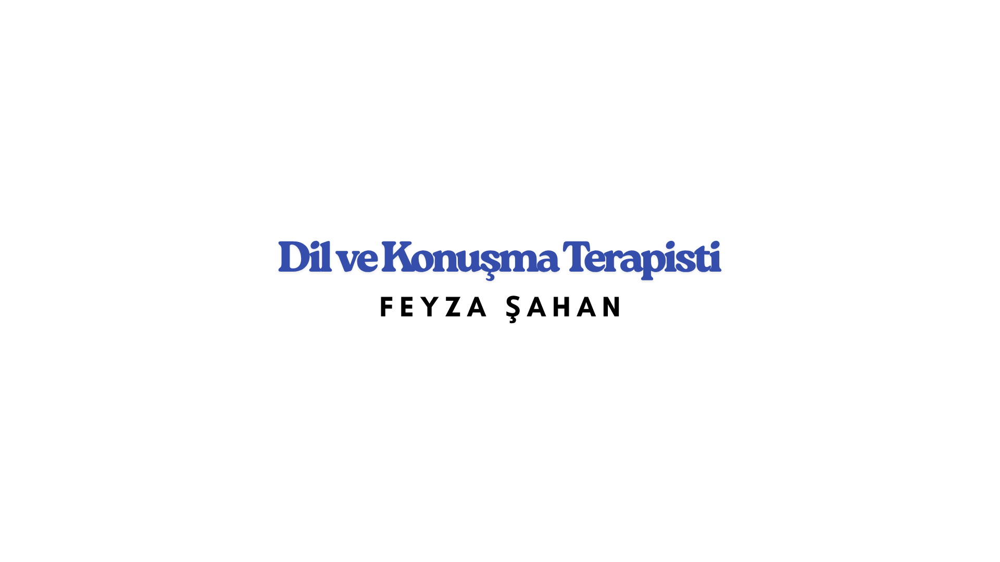

Çalışma Alanlarım
Konuşma Sesi Bozuklukları
Bireyin sesini doğru kullanamaması veya kelimeleri net söyleyememesi, günlük iletişimini olumsuz etkileyebilir. Konuşma bozuklukları; harfleri yanlış söyleme, kekeleme ya da akıcılık sorunları şeklinde görülebilir.
Gelişimsel Dil Bozukluğu / Gecikmiş Dil Konuşma
Çocuğun yaşına uygun şekilde konuşma ve dili kullanma becerilerinin gelişmemesidir. Kelime hazinesi sınırlı olabilir ya da geç konuşmaya başlayabilir.

Akıcı Konuşma Bozukluğu (Kekemelik - Hızlı Bozuk Konuşma)
Konuşma sırasında duraklamalar, tekrarlar ya da ses uzatmaları ile ortaya çıkar. Hızlı ve düzensiz konuşma da bu kapsamdadır.
Otizm Spektrum Bozukluğu
Otizmli bireylerde sosyal iletişimde zorluklar ve sınırlı dil kullanımı görülebilir. Dil ve konuşma terapisi, iletişim becerilerini geliştirmeye yardımcı olur.
Sendroma Bağlı Dil Bozuklukları
Down sendromu gibi genetik durumlarda görülen dil ve konuşma güçlüklerini ifade eder. Bireyin gelişim düzeyine uygun terapi süreci planlanır.
Edinilmiş Dil Bozuklukları
Beyin hasarı, inme (felç) veya travma sonrası dil becerilerinin kaybedilmesiyle ortaya çıkar. Daha önce edinilmiş dilin yeniden kazandırılması amaçlanır.
Motor Konuşma Bozuklukları
Konuşmayı sağlayan kasların hareketinde zorluk yaşanmasıdır. Apraksi ya da dizartri gibi durumlar bu gruba girer.
Rezonans Bozuklukları (Dudak Damak Yarıkları)
Dudak ya da damakta doğuştan gelen açıklıklar nedeniyle sesin burundan kaçması ya da bozuk çıkmasıdır. Konuşma terapisi ve cerrahi destek gerekebilir.
Ses Bozuklukları
Sesin kısık, çatallı, yorulmuş ya da aşırı tiz/kalın çıkması gibi durumlardır. Genellikle yanlış ses kullanımı veya ses telleriyle ilgili bir sorun söz konusudur.
Yutma Bozuklukları
Yeme-içme sırasında gıdanın ağızdan mideye güvenli şekilde iletilememesi durumudur. Çocuklarda ve yetişkinlerde görülebilir.
Disleksi ve Disgrafi
Disleksi okuma güçlüğü, disgrafi ise yazma güçlüğüdür. Harf karıştırma, yavaş okuma/yazma gibi belirtilerle kendini gösterir.
Placeholder content for this accordion, which is intended to
demonstrate the
.accordion-flush class. This is
the first item’s accordion body.
Placeholder content for this accordion, which is intended to
demonstrate the
.accordion-flush class. This is
the second item’s accordion body. Let’s imagine this being
filled with some actual content.